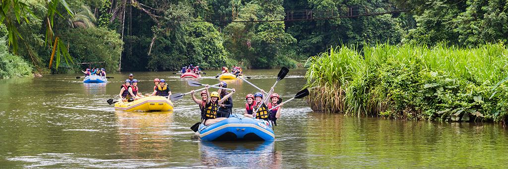

At White Water Rafting Adventures, our mission is to provide thrilling, safe, and unforgettable river experiences. Whether you're chasing big rapids or a scenic float, our expert guides deliver fun, confidence, and memories that last.


At White Water Rafting Adventures, our mission is to provide thrilling, safe, and unforgettable river experiences. Whether you're chasing big rapids or a scenic float, our expert guides deliver fun, confidence, and memories that last.
Founded in 1995, White Water Rafting Adventures began as a small group of river enthusiasts who wanted to share their love of the outdoors. From day one, our focus has been safety, service, and genuine adventure.
Today we guide families, first-timers, and thrill-seekers through unforgettable canyon runs. Our goal is simple: help you experience the river in a way that feels exciting, safe, and worth repeating.